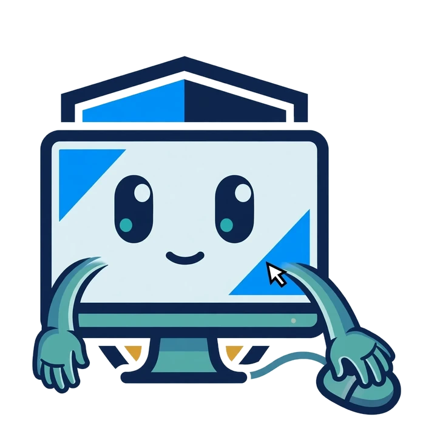

DeskGuest
DeskGuestEverything you need for safe
remote help — nothing hidden.
Two installs per OS (Quick Fix & Full Platform), zero accounts, zero DeskGuest cloud, built for Windows and Android.
Always-Visible Presence & Instant STOP
Help can only happen while you can see it — a banner names who is connected, and the red STOP always works.
AI Agents as First-Class Helpers
Stepped access slider & ask-first approvals.
Quick Fix One-Time Help
The 10-minute single-use code.
Standing Meeting Rooms
Voice, video, screen share, and room admission.
Direct Local Connections & Dead-Zone Mode
No cloud required. No cloud hops.
Plain-Language Receipts & 34-Word Recovery
Local records you own.
One product, two installs per platform, nothing held back for a paid tier — there isn't one. The full tour follows, family by family.
Presence & consent — the heart of it
Help can only happen while you can see it. Three things are on your screen for every session, and nothing — no setting, no policy — can turn them off.
The Box
A banner names exactly who is connected — a person or a named AI agent — what they are doing, and carries a red STOP button that always works.
The Ghost
Your helper's pointer is a ghost: a ring carrying their initial, never confused with your own cursor. You watch every move as it happens.
The Glow
A soft edge of light around your screen while a session is live, so a connection is visible even from across the room.
You can take back control
Touch your mouse or keyboard and you're driving again — your helper's pointer dims and waits. How that hand-off behaves (take over, share, or hotkey only) is your setting, chosen on your device. And while you've taken over — for a login, say — all capture suspends: the record shows a takeover happened, never what it contained.
Approvals before actions
Anything that matters — sending a file, changing a setting, running a command — arrives as a clear action card. Your tap is the approval, and it's written into the session record.
Background Work Only
Mid-session, you can hold all screen work with one toggle. Your helper keeps doing permitted background work, the held items are counted where you can see them, and the banner stays up.
A face you can recognise
Every helper — person or AI — has a name and a face that ride along with their pairing. You learn to recognise your helper the way you recognise a voice on the phone.
A running commentary
A persistent activity line states in plain words what your helper is doing as they act, and a ripple marks every touch as it lands. Session sounds announce the start and the end — a session never begins or ends silently.
STOP lives everywhere
The session is mirrored in your notification area for its whole duration, with elapsed time and who's acting — and session state with a one-tap STOP sits on your home screen and quick settings too. You never have to hunt for the exit.
Every display accounted for
On a machine with several screens, DeskGuest inventories them all, and the presence layer marks which display is being driven. Help happens on the screen you can see it on.
Sensitive surfaces ask for more
On screens you mark sensitive, the banner persists and the session requires an unlocked, screen-on device for the duration of the action. And in a moving vehicle, screen driving is refused outright — voice-grade interaction only.
Many ways to connect — chosen automatically
DeskGuest sets up its own connections. It tries the most direct road first, steps down to the next when a road is blocked, and steps back up when the better road returns. The road in use is always shown, honestly.
Same network
Direct, device to device, on your own Wi-Fi or office network. Nothing leaves the building.
Across the internet
Direct where your connection allows it; otherwise through sealed relays that can carry a session but can never read one.
Your own hub
Run the optional hub on a machine you own and your devices can always find each other through it — still sealed, still yours.
It heals itself — and shows you
After a reboot and your unlock, the device restores its own connection, then checks its own health and reports green, amber, or red in plain words. Across its first reboots it keeps count of how it did and tells you the result instead of assuming. If a link can't heal itself, you get exactly one notification naming the exact action that clears it.
Dead-zone mode
No internet at all? DeskGuest says so, and keeps working on the roads that remain — your local network and direct paths. A path that's down is shown as down, with its reason. Never a hang, never a pretend connection.
Wake before you connect
A sleeping device on your network can be woken for a session, and roads you build yourself — your own tunnel, your own addresses — are first-class citizens beside the built-in ones. Your devices find their connection points by listening on-device; no external scanning exists anywhere in the product.
There are also privacy-heavy options (a swarm phone-book that finds devices without any server knowing the list, and a Tor road) and, for people who already have one, their own private network. Switching roads never means pairing again. How the sealing works
Quick Fix — help for anyone, in seconds
For the "my computer is doing something weird" moments, there is a tiny separate app: DeskGuest: Quick Fix.
 One link
One linkClick and you're talking
One invite link opens a session in the browser — voice, chat, screen sharing. No download, no account, no codes read aloud.

One more tapLet them take over
When watching isn't enough, one tap brings in a one-time helper program for full control — under the full presence rules.
 Hang up
Hang upIt removes itself
When the session ends, the helper program deletes itself and the link dies. Nothing is left behind, ever. Quick Fix can never be used to reach a device unattended.
Quick Fix, in full — the two ways in, the anti-scam design, and the helped person's rights
Rooms & live collaboration
Fixing a machine? Start a session. Gathering people? Host a room.
Sessions
The live event, on one device: screen, voice, chat, file transfer, and — when the owner allows — control. Your helper — a person or an AI agent — takes part under their own name and permissions. Several named helpers in one session together is in development.
Rooms
A standing meeting place owned by a group: named members, one standing invite link, and a memory — session records, notes, transcripts, and receipts are filed in the room where they happened.
Working side by side
One person drives at a time; everyone else in the session is present under their own name — able to watch, point at what they mean, and take notes — and the record names whoever held the wheel, and when. Two people driving at once, each with their own named pointer, is in development. An AI can also join just to watch, take notes, and point things out — without driving.
A receipt for the person helped
After every session, a plain-language summary is left on the helped device — who was here, what they did, in that device's language. Help leaves a paper trail the helped person can read.
Your AI, working beside you
DeskGuest has no AI of its own — you pair yours. The agent you already use connects as itself, under its own name and face, and works inside the same presence, approvals, and STOP as any human helper. The AI arrangement, in full
Bring your own agent
Any agent built on the open standard can pair — DeskGuest connects through MCP, the standard agents use, and no agent gets special treatment because of who made it. Pairing is always your manual act, with a one-time code; an agent can never pair itself or widen its own access.
The leash
You set what each agent may do — look only, full control, or a custom mix of watching, controlling, running commands, and system administration — per pairing, changeable any time. New pairings start at look only. Sensitive actions still stop and ask, in every mode.
Orders you approve
Chat with your agent inside DeskGuest and tell it what you want. Action arrives as a structured card you approve with one tap — free text never executes. From your phone, you can direct an agent working on another device entirely; the full presence shows there, and you hold a remote STOP.
It sees structure, not just pictures
Your agent reads the screen as a tree of labelled elements and acts by reference — a stale reference fails rather than guessing a tap. It can follow a session on a live feed, point things out without driving, and read a screen into structured data. Apps you mark invisible stay invisible to it entirely.
It speaks, if you want it to
Paired agents can speak and listen in a session. The default voice is built in and local — it works offline and phones nothing home. You can give each agent its own voice pack, and an agent that brings its own voice is labelled as doing so.
Groups, devices & your fleet
Your devices find each other by introduction, not by account. Everything you own syncs — your device list, groups, profile, and settings — sealed, over the same connections.
Your circle
Your own devices form a private circle. Add a device once, from a device you already trust, and it belongs.
Groups
Family, a workplace, a customer site — each group has its own members, its own sealing, and its own admins. Groups can't read each other.
A helped device never sees your other devices
A device you help sees only the people and agents paired to it. Your other devices and groups are not listed there — they aren't hidden, they're absent.
Add a device by ID + code
A new device shows its own ID and a one-time code — ten minutes, single use, never a standing password. From inside a group, on any of your devices, "Add device" joins it: one act makes it a member and pairs it.
Your devices sync — sealed
Your device list, groups, profile, settings, and customisation sync between your own devices over the same encrypted connections, with no account anywhere. Want an always-available copy? It lives as a sealed blob on your own hub, which cannot read it.
A device's job is chosen at setup
Installing asks one question: "What will this device do?" Help others, receive help with someone present, be reachable when nobody's here — combinable. An attended-only install carries no unattended pathway at all: the door doesn't exist, dormant or otherwise.
Before you connect
The operator sees a device's vitals first — disk, battery, a reboot waiting, health flags — before starting work. And a paired agent, at your request, can ring your phone at full volume even on silent, or put your words on its screen.
The workplace pack
The same product, run by an organisation: monitoring and alerts, patch management with approvals, inventory, backups, and evidence packs an auditor can read — every feature governed by signed policy, with an Effective Policy view that shows exactly what applies to any device. For Workplaces · For IT
Policy that can't be quietly changed
Settings flow from signed policy with inheritance. What a device actually runs under is one view away, and every change is written into the record.
Camera viewing, with manners
Standard security cameras can be viewed inside device groups — every view needs permission, is written into the record, and can be switched off by policy. Audio is off by default.
Offboarding in one action
Remove a person and you first see the full list of what changes — their access, their devices, their agent pairings — then confirm once.
Sign-in, the organisation's way
An organisation can gate key use behind its own sign-in system, on its own tenant, with its own multi-factor rules. DeskGuest still holds no account and receives nothing.
Vendor access that expires
Outside help gets a time-boxed grant: this vendor, these devices, until Thursday. Outside the window the access doesn't exist, and expiry is automatic and written into the record — nobody has to remember to take it back.
Automation, signed
Runbooks, scheduled missions, and script engines run under a signature policy: automation runs only signed work, credited to its author and written into the record like everything else. Unsigned work doesn't run quietly — it doesn't run.
Billable time
Session time per site comes straight from the Activity Record — the same record the customer can inspect — and exports for invoicing. No stopwatch screenshots, no disputed hours.
Paperwork, your way
Evidence packs and reports can carry your organisation's logo and colours; alert thresholds and retention windows are yours to set. And a sole admin names a successor in advance, on a defined trigger — succession is planned, not improvised in a crisis.
Make it yours
Every part of DeskGuest can be tuned — and every tune is optional, with a sensible default, so nobody has to make a decision to get started.
Faces
Pick your face and your agents' faces from large built-in galleries — professional, modern, and fun — or upload your own. A paired AI's face is a safety feature: you learn to recognise your helper.
Pointers
Your helper's ghost pointer comes in galleries too — professional, minimal, and fun — recoloured per agent, with size and name-tag options.
Presence, your way
Banner size, glow intensity, border styles, sounds — all adjustable, within a floor that can't be crossed: presence is never invisible, the driver is always named, and STOP is always there.
Session feel
Picture quality versus smoothness, which screen is shared first, clipboard defaults, where received files land, and your own shortcuts for taking back control.
Arrange your world
Colour-code sites and groups, pin favourites, choose list density, pick which fields a device card shows, and tag devices your own way. Your console looks like your work, not like a demo.
Family mode
A named preset that collapses the whole product to the family-help shape: the fewest concepts, the largest targets, everything else hidden but present. Set it up once for a parent; they never meet the machinery.
Accessible by design
Generous touch targets, contrast floors, type that survives being scaled to 200%, and full screen-reader support in the app's own interface. The product follows each platform's own design language — and its dark theme is designed, not inverted.
Layers, so it never overwhelms
Every setting lives in Basics, Preferences, or Advanced fine-tune; settings are searchable, and every section resets independently. Company policy may pin or hide items for a fleet. The one thing no layer contains: the consent floor.
No account — and still a way back in
Losing every device you own shouldn't mean losing your digital life. DeskGuest gives you several independent doors back in; any one of them is enough.
Another of your devices
Any surviving device can welcome a new one in.
A recovery file
Sealed with a password only you know. Keep it anywhere — it's useless without the password.
A trusted person
Their device holds a sealed piece that opens nothing alone; restoring needs their tap of approval.
You can also split your way back into pieces kept in different places (any two of three restore you), or keep the classic word sheet. Settings always shows how many ways back in you have — and only nags when the answer is none.
How DeskGuest compares — feature by feature
The full check, in the same spirit as our AI support table: every feature that matters, marked for each product as included free, included in a paid plan, not offered — or, for DeskGuest, still in development or planned. Every claim about another product was checked against its maker’s own pages, and the rows where the established names are ahead of us are printed in the same table — not footnoted, not hidden.
- ✓ Freeincluded in the free version
- ✓ Paidincluded in a paid plan — the note names the cheapest tier we could verify
- —not offered
- In developmentDeskGuest only: designed and being built, not in the product yet
- PlannedDeskGuest only: on the roadmap — work hasn’t started yet
| Feature | DeskGuestThis product | TeamViewerRemote support & access | AnyDeskRemote support & access | RustDeskOpen-source remote desktop | Zoom & TeamsMeeting screen sharing |
|---|---|---|---|---|---|
| Getting help & control | |||||
| Remote view & control | ✓ FreeThe helper sees the screen and drives — mouse, keyboard, the lot — while the owner watches | ✓ FreeFree for personal use. Work use needs a licence, from $24.90/mo | ✓ FreeFree for personal use. Work use from Solo, $28.90/mo | ✓ FreeThe client and the open-source server are free | In a meetingZoom’s remote control is in its free plan. Microsoft’s own pages conflict on free Teams, so we don’t claim it there; paid Teams has it |
| Unattended access — nobody at the device | ✓ FreeOnly under a standing grant the owner gave in advance — scoped, time-boxed, and revocable at any moment. No permanent passwords; presence and the record apply in full | ✓ PaidIn the Remote Access plan, $24.90/mo, for up to 3 devices | ✓ PaidListed in Solo, $28.90/mo, and up. AnyDesk’s own pages are ambiguous about the free version | ✓ FreeA permanent password set on the device | —Neither product can reach a device with nobody there |
| One-time help — nothing to install | ✓ FreeQuick Fix: the helped person opens a link — view in the browser, one tap adds a small helper for full control, and it removes itself afterwards | ✓ FreeQuickSupport runs without installing. Free for personal use | ✓ FreeIts portable client runs without installing | ✓ FreeThe client runs portably — nothing to install | ✓ FreeGuests join a meeting in the browser. Hosting one needs an account |
| File transfer | ✓ FreeFiles move over the same session channel, into the owner’s chosen folders | ✓ FreeFree for personal use; in every paid plan | ✓ FreeFree for personal use; in every paid tier | ✓ FreeBoth directions | —No device file transfer. Files can be shared inside a Teams meeting’s chat — a different thing |
| Clipboard sharing | ✓ FreeCopy on one device, paste on the other — under the owner’s clipboard policy | ✓ FreeClipboard sync in all licences; the free one is personal use | ✓ FreeFree for personal use | ✓ FreeA client permission, on by your choice | —Nothing on the clipboard passes between devices |
| Terminal & shell on the device | ✓ FreeA session-scoped terminal — and everything done in it is in the record | ✓ PaidRemote Terminal is in the Business plan, $50.90/mo | Linux onlyRemote Shell opens a terminal on a remote Linux device. There is no Windows or Mac shell | ✓ FreeThe client offers a terminal; the device’s owner can switch it off | — |
| Remote reboot | ✓ FreeReboot from inside the session; the device brings its channel back after the owner’s unlock | ✓ FreeFree for personal use; in the paid plans | ✓ PaidRemote Restart is ticked from Solo, $28.90/mo | ✓ Free | — |
| Wake-on-LAN | ✓ FreeWake a registered device on its own network, on the owner’s say-so | ✓ PaidRemoved from the free version; in Remote Access, $24.90/mo | ✓ PaidIts free-vs-paid page lists Wake-on-LAN as lacking in free; in Solo, $28.90/mo | ✓ FreeWorks after local-network discovery | — |
| Remote printing | In developmentOn the session-basics list; not in the current build | ✓ PaidListed in the Remote Access plan, $24.90/mo | ✓ PaidListed as lacking in free; in Solo, $28.90/mo | ✓ FreeA remote printer for incoming connections, on Windows | — |
| Session recording — video | In developmentSpecced to live on your own devices, never a maker’s cloud. The timeline replay below is the built form today | ✓ PaidRecord and playback is verified from Business, $50.90/mo | ✓ PaidSession recording is listed as lacking in free; in Solo, $28.90/mo | ✓ FreeThe client records sessions, and can do it automatically | Partly freeZoom records locally on its free plan; cloud recording needs Pro, $14.16/user/mo. Teams recording starts with Essentials, $4.00/user/mo |
| Session replay — a step-by-step timeline | ✓ FreeEvery session replays in the app: timeline, pointer path, actions and approval events, tied to the record | —Its recording is video — the row above | —Its recording is video — the row above | —Its recording is video — the row above | —Their recordings are video — the row above |
| More than one monitor | In developmentChoosing which of the device’s screens a session covers is in development | ✓ FreeSwitch between the device’s monitors; free is personal use | ✓ FreeMulti-monitor viewing; free is personal use | ✓ FreeMulti-monitor, including switching | ✓ FreeShare one screen at a time on free plans |
| Presence & safety | |||||
| The helper, named on your screen | ✓ FreeA banner names the helper — a person or an AI — and what they’re doing, for the whole session. It carries STOP and can’t be switched off | ✓ FreeA panel shows the connecting person’s name or ID | ✓ FreeThe accept window shows the connecting user’s name and ID, and stays up | ✓ FreeThe session window shows who is connecting, with a Disconnect button | ✓ FreeEveryone in a meeting is a named participant |
| A STOP that ends everything at once | ✓ FreeThe STOP button — or the STOP hotkey (Ctrl+Alt+Shift+F9) — ends the session instantly. No setting, policy or helper can switch it off | ✓ FreeThe person at the device can end the connection from the panel | ✓ FreeDisconnect sits in the accept window for the whole session | ✓ FreeA Disconnect button in the session window | ✓ FreeLeave or end the meeting at any time; the host can remove anyone |
| The owner says yes before control begins | ✓ FreePairing consent for standing helpers; one Allow tap for one-time help. Nothing connects quietly | ✓ FreeThe helped person accepts the session — or grants standing access in advance | ✓ FreeThe accept window asks before control; standing access is the owner’s to set | ✓ FreeAn accept prompt, or a permanent password the owner set | ✓ FreeThe host admits people; control changes hands only when the sharer grants it |
| Approvals for sensitive actions, one by one | ✓ FreePayments, sends, deletions and installs wait for the owner’s on-device approval — in every access mode | —Once a session starts, control is all-or-nothing | —Permissions are set per profile in advance, not approved action by action | —Permissions are set in advance, not approved action by action | — |
| A different leash for every helper | ✓ FreeLook only, drive, shell, admin — set per pairing, changeable any time, and new helpers start at look only | ✓ FreeAccess Control — full, confirm-all, view-only, custom — is a policy in all licences | ✓ PaidPermission profiles are limited in Solo, $28.90/mo, full from Standard, and lacking in free | ✓ FreeKeyboard, clipboard, files, terminal and more — each switchable in the client | —Meeting roles like host and presenter aren’t device permissions |
| Apps the helper can never see | In developmentBuilt on Android today: the owner marks apps — banking, password managers — invisible; they can’t be viewed, driven, or even listed. The Windows build doesn’t have this yet | — | — | — | —Sharing one window keeps other windows out of the picture, but there’s no owner-set invisible list |
| No account, no sign-up | ✓ FreeIdentity is a key made on the device. There is nothing to sign up for | —Every licence is tied to a TeamViewer account. Getting help via QuickSupport needs no account | ✓ FreeWorks by device ID; an account is optional and adds extras | ✓ FreeWorks by device ID | To host, yesJoining a meeting as a guest needs no account |
| No maker’s cloud in the middle | ✓ FreeConnections go device to device, over your own network, or through a hub you host | —Accounts, device IDs and session routing live in TeamViewer’s cloud | ✓ PaidSessions run through AnyDesk’s network — unless On-Premises, in Ultimate, priced by quote | ✓ FreeOnly its public servers sit in the path by default; host your own and nothing of theirs does | —Meetings run in Zoom’s or Microsoft’s cloud |
| Collects no usage data about you | ✓ FreeZero telemetry is a code fact: there is no analytics code in the build to switch off | —Not a claim TeamViewer makes — it runs on accounts in its cloud | —Not a claim AnyDesk makes | ✓ FreeSelf-hosted, nothing is sent to RustDesk. Its public servers see connection metadata | —Not a claim either makes — both are cloud services |
| Working together | |||||
| Text chat in the session | ✓ FreeChat rides inside the session, beside the live view | ✓ PaidChat during a session is in Business, $50.90/mo — TeamViewer removed chat from its free version | ✓ FreeChat from the session request onward; free is personal use | ✓ Free | ✓ FreeMeeting chat in both, free plans included |
| Voice in the session | In developmentA voice channel inside the session itself is in development | ✓ PaidVoIP and video in a session are in Business, $50.90/mo — removed from free | —No voice or video call in its feature list. It can carry the device’s audio, which isn’t a call | —No voice call in its feature list. It can share the device’s audio | ✓ FreeVoice is the meeting itself. Free group meetings cap at 40 minutes (Zoom) and 60 minutes (Teams) |
| Several helpers in one session | In developmentThe floor model — one driver at a time, everyone named — is built into the session layer; the finished participant experience is in development | ✓ PaidInviting additional participants into a session is listed in Premium, $120.90/mo | —Its pricing counts connections to different devices; several helpers on one device isn’t a listed feature | ✓ FreeConcurrent connections aren’t capped on its standard plans | ✓ FreeA meeting is many people by nature; one person holds control at a time |
| Two helpers driving at the same time | In developmentSide-by-side driving — each helper with their own named pointer, every action attributed — is designed and in development | —One driver at a time; control can be handed over | — | —Not a designed mode | —One person holds control at a time |
| Point & draw on the screen | In developmentThe helper’s ghost pointer is built and visible today; drawing and annotation are in development | ✓ PaidThe session whiteboard is verified from Business, $50.90/mo | ✓ FreeThe whiteboard is in its free features; free is personal use | —Not in its feature list | Zoom: free · Teams: paidZoom’s annotation and Whiteboard are free. Teams’ collaborative annotations and Whiteboard sit in Essentials, $4.00/user/mo, and up |
| A standing room your people return to | In developmentRooms — named members, a standing link, the history of everything in them — are designed and in development | —Its meetings are scheduled, not standing places | — | — | ✓ FreeTheir shape is the team and the channel: persistent places with members and history |
| Schedule help ahead of time | In developmentScheduling a session is a settled product verb; the build is in development | Meetings onlyTeamViewer meetings can be scheduled; a support session isn’t booked the same way | — | — | ✓ FreeMeetings schedule ahead on free plans, inside the free time caps |
| Records & audit | |||||
| A record of every session | ✓ FreeAn append-only record on the device itself: who was here, what they did, what was approved. Only the owner can export it | ✓ PaidConnection reports live in TeamViewer’s console, from Premium, $120.90/mo | ✓ PaidDetailed connection reports need a licence: session history in Solo, $28.90/mo, fuller from Standard | ✓ PaidThe audit log is a Server Pro feature, from Individual, $11.88/mo | ✓ PaidMeeting and usage reports sit in their paid admin tools |
| A count of what an AI helper was shown and sent | ✓ FreeEvery agent session carries a data-flow count under the agent’s own name — what it was shown, tool by tool | — | — | — | — |
| AI | |||||
| Your own AI agent can be the helper | ✓ FreeAny agent that speaks MCP can pair. ChatGPT and DeepSeek are tried and fully supported | —TeamViewer’s AI is its own; your agent can’t pair | —No way to pair your own agent | —No way to pair your own agent | —Their AI assistants are their own; your agent can’t pair |
| AI helpers are leashed members, never admins | ✓ FreeAn agent connects under its own name, inside the access the owner granted — never as an admin, never unnamed | — | — | — | — |
| The maker’s own AI — summaries & assistants | —DeskGuest ships no AI of its own. Your agent is yours, and its plan is between you and its maker | ✓ PaidTeamViewer AI — a troubleshooting assistant and session summaries — rides on AI credits: 50 a month in Premium, $120.90/mo | —Its AI page and feature list offer no AI assistant or summaries | —No AI in its capability list | ✓ PaidZoom’s AI Companion is included in paid plans from Pro, $14.16/user/mo. Teams’ recap AI is an add-on — Teams Premium, $10/user/mo |
| Platforms, hosting & teams | |||||
| Windows, as the device being helped | ✓ Free | ✓ FreeFree for personal use | ✓ FreeFree for personal use | ✓ Free | ✓ Free |
| Android, as the device being helped | ✓ FreeThe full product for your phone, with the same presence, approvals and STOP | ✓ PaidMobile device support is an add-on — and only on Business, $50.90/mo, and up | ✓ FreeAndroid control is in the free version for personal use, and in every paid tier | ✓ Free | Screen shareBoth apps run on Android and can share its screen in a meeting; driving a phone isn’t their shape |
| iPhone or iPad, as the device being helped | —No iOS version. Apple also bars any app from controlling an iPhone — every maker faces that wall | ✓ FreeView only — Apple’s rule. Free for personal use from a phone, capped at 5 minutes; work use needs the mobile add-on | ✓ PaidView only — Apple’s rule. A paid outgoing client is required, from Solo, $28.90/mo | —Its iOS app is a controller only — it can’t be controlled, or share its screen | ✓ FreeAn iPhone can share its screen into a meeting, free |
| Mac, as the device being helped | PlannedA Mac version is on the roadmap; work hasn’t started, and Windows & Android come first | ✓ FreeFree for personal use | ✓ FreeFree for personal use | ✓ Free | ✓ Free |
| Linux, as the device being helped | PlannedA Linux version is on the roadmap; work hasn’t started, and Windows & Android come first | ✓ FreeFree for personal use | ✓ FreeFree for personal use | ✓ Free | ✓ Free |
| Works with no internet — your own network only | ✓ FreeThe local-network path is a first-class rung, proven end to end | ✓ FreeLAN mode connects by address, with no TeamViewer servers involved | ✓ PaidDirect local connections exist, but starting sessions in the cloud version needs the internet. Fully offline is On-Premises, in Ultimate | ✓ FreeDirect connections and local discovery on your own network | —Meetings need Zoom’s or Microsoft’s cloud |
| Host the connecting service yourself | ✓ FreeRun your own hub — free. And plenty works with no hub at all | —A cloud service. An enterprise add-on can keep session data on your premises, but connections are still set up through TeamViewer’s cloud | ✓ PaidOn-Premises is in Ultimate, priced by quote | ✓ FreeThe open-source server is free. The Pro server, from $11.88/mo, adds the console | —Cloud services |
| Your devices & groups, saved | ✓ FreeYour devices and groups live on your own devices and hub. An endpoint never receives a roster of your other devices | ✓ FreeComputers & Contacts is free for personal use; paid tiers scale how many devices you manage | ✓ FreeAn address book holds up to 5 contacts free; paid tiers scale it — Solo holds 100 entries | ✓ FreeSaved peers on this device are free; a shared address book with groups is Server Pro, from $11.88/mo | —Contact lists exist, but not a roster of your devices |
| Single sign-on for a team | In developmentOIDC sign-in on your own hub — designed; in development, not in the current build | ✓ PaidSingle sign-on is listed only in Tensor, priced by quote | ✓ PaidSingle sign-on only in Ultimate, priced by quote | ✓ PaidOIDC sign-on arrives in Server Pro Basic, $23.88/mo | ✓ PaidZoom’s SSO is in Business plans, from $18.33/user/mo. Teams signs in with your Microsoft account; organisational SSO comes with Microsoft 365 |
| Your logo on the client & reports | In developmentCompany branding on evidence packs and reports is designed; not built yet | ✓ PaidCustom branding is in Business, $50.90/mo | ✓ PaidThe custom client generator and branding start in Standard, $49.90/mo | ✓ PaidThe custom client generator arrives in Server Pro Basic, $23.88/mo | ✓ PaidZoom branding is in Business, $18.33/user/mo. Teams’ branded meetings ride on Teams Premium, $10/user/mo |
| Deploy it silently across a fleet | In developmentA silent enterprise installer, with the package’s publisher check — in development, not in the current build | ✓ PaidMass deployment is listed from Premium, $120.90/mo | ✓ PaidMass deployment by MSI is only in Advanced, $111.90/mo, and Ultimate | ✓ FreeInstallers and scripted configuration are free; the management console is Pro | ✓ FreeBoth publish MSI/GPO deployment for IT admins — admin tooling, not a paid tier |
| The bottom line | |||||
| Price | FreeThe whole product, for anyone — work use included. Open source | Free for personal useWork use from $24.90/mo, billed yearly | Free for personal useWork use from $28.90/mo, billed yearly | FreeOpen source. The optional Pro server starts at $11.88/mo, billed yearly | Free tiers, with limitsZoom’s free group meetings cap at 40 minutes, Teams’ at 60. Paid from $4.00/user/mo (Teams Essentials) and $14.16/user/mo (Zoom Pro), billed yearly |
| Track record | Brand newIn development — the first release lands in Q1 2027; downloads aren’t open yet. Nothing here has their years of polish, and we won’t pretend otherwise | The established nameIn remote support since 2005 | EstablishedShipping since 2014 | Established open sourceAround since 2020, with a large community | Built into working lifeZoom since 2011; Teams comes with Microsoft 365 in most workplaces |
- How this table was made: every claim about another product was checked against its maker’s own pages — feature lists, pricing pages, help docs, platform lists — in November 2026. Prices are published list prices in US dollars, billed yearly, before tax. Makers change both, often; if a row ever looks stale, that’s a bug — report it.
- Free means different things: TeamViewer’s and AnyDesk’s free versions are for personal use only — both say work use needs a licence. DeskGuest’s free is the whole product, work use included. RustDesk’s free is its client plus its open-source server.
- Where a maker’s own pages conflict — it happens — the table prints the lowest tier we could verify and the note says so, rather than guessing the generous reading.
- The Zoom & Teams column is a different shape of tool: meeting software, where sharing a screen and handing over control happen inside a meeting. It’s here because it’s what many people reach for today when someone needs help.
- Where they beat us, in this table: platforms (no iOS version; Mac and Linux versions are planned, none started), video recording, in-session voice, remote printing, and custom branding — each printed in the table as in development, planned or not offered, not footnoted away. When they change, the table changes.